航運行政人員
Excel 資料前處理實務
從介面導覽、資料健檢、30 筆示範檔到 300 筆跨情境實戰演練
Tidy Data • 零公式功能操作 • 常用自動化清洗函數 • ISO 6346 檢核
課程大綱：全書八大教學模組
第 1 章 ｜ 前言與教學使用指南
為什麼航運行政要學資料前處理？全書學習地圖與配套檔案說明。
第 2 章 ｜ 認識 MS Excel 操作介面
九大視窗核心區域、功能區「資料/公式」導覽、4 種游標形態與高頻快速鍵。
第 3 章 ｜ 資料前處理基本常識
GIGO 理論、整潔資料三大原則、四大資料型態判別與 SOP 黃金五步驟。
第 4 章 ｜ 30 筆示範檔建置與健檢
海運出口訂艙明細表、12 大欄位定義規範與刻意埋入之 8 類髒資料全面清查。
第 5 章 ｜ 功能選項免公式清理術
條件式標紅、移除重複項目、Ctrl+H 替換、資料剖析拆解、篩選空格與 Ctrl+T 表格。
第 6 章 ｜ 函數公式實戰自動化
TRIM/CLEAN、UPPER、LEFT/MID、LEN 11碼貨櫃檢核、VALUE、DATE、IF 與 XLOOKUP。
第 7 章 ｜ 300 筆跨情境實戰與解答
FCL、LCL、進口延滯、危險品冷凍、空運急件 5 大情境、八大任務與基準驗證。
第 8 章 ｜ 參考資料與延伸閱讀
Microsoft Excel 官方文件、Hadley Wickham 論文、UNECE、Incoterms 2020、ISO 6346。
為什麼航運行政人員必須先學「資料前處理」？
痛點一：金額加總變成 0
系統匯出海運費為 USD 1,850 或 $2,100 ，因為夾帶文字與空白，Excel 自動判定為「文字型態」，使用 =SUM() 時全數被略過，財務結算慘遭漏算！
痛點二：同一個港口四分五裂
同樣是高雄港，有人填 TWKHH、有人填小寫 twkhh，甚至有人多按空白變成 " TWKHH "。拉樞紐分析表時，同一個港口被拆成三筆，管理階層無法統計正確裝船量。
痛點三：VLOOKUP 查表滿江紅 #N/A
當想比對標準港口中文名稱時，因為輸入代碼尾端帶有隱形換行符號 \n 或前後空格，查表函數判定完全不相符，導致滿屏錯誤代碼，行政作業嚴重卡關。
認識 Excel 操作介面：九大核心區域分解
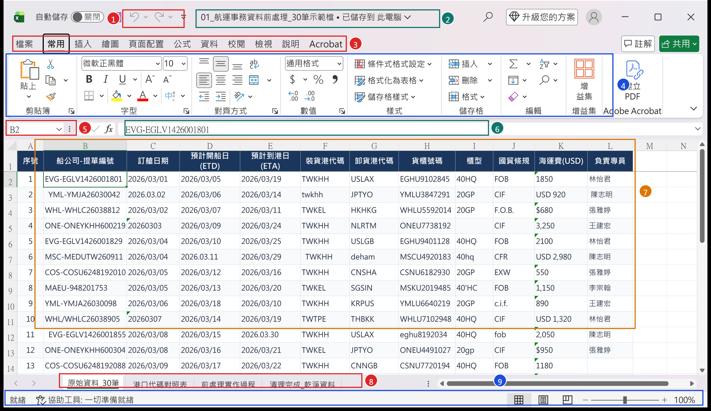
兩大主力功能區、滑鼠游標 4 態與 6 大神級快速鍵
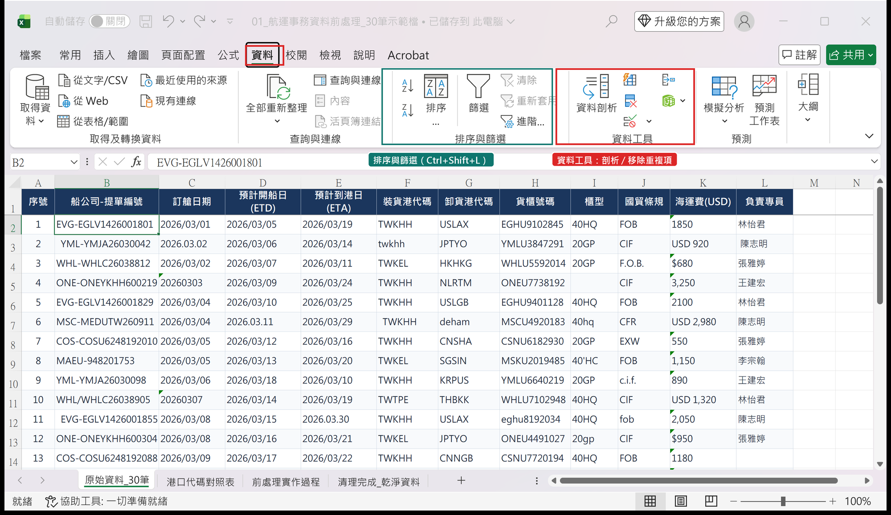
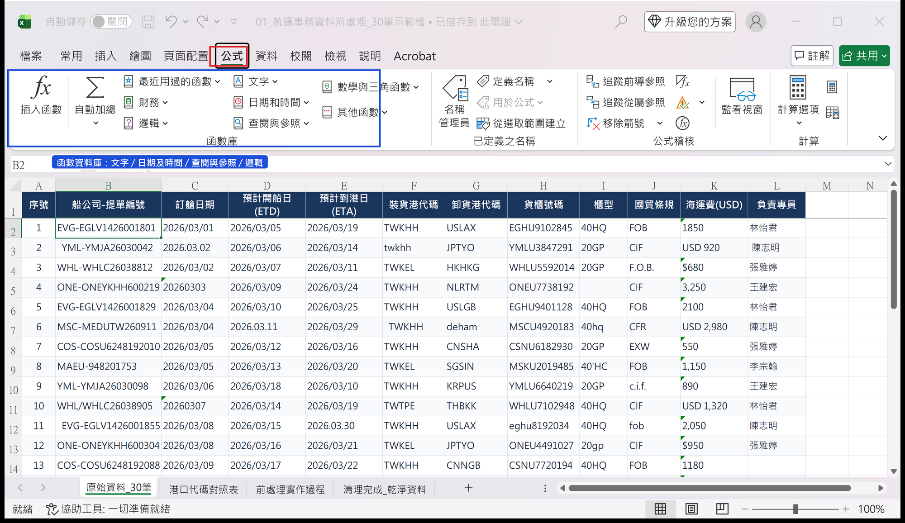
🎯 滑鼠游標四種必辨形態
⚡ 航運前處理 6 大高頻快速鍵
整潔資料三大原則（Tidy Data）與四大型態辨識
一欄只放一個變數
嚴禁將「船公司」與「提單號」擠在同一格（如 EVG-EGLV1426001801）。海運費欄只能有純數字，幣別（USD）應寫在表頭。
一列只放一筆紀錄
不可在中途插入「小計列」、「空白隔行列」或「跨欄置中區隔列」，否則排序和篩選功能會徹底斷裂錯位。
嚴禁合併儲存格
合併儲存格（Merge Cells）是資料分析的最大天敵！除了左上角第一格外其餘皆為空值，會摧毀樞紐分析與公式參照。
航運實務常見「髒資料」六大典型病徵
重複輸入的提單或訂艙
同仁 A 手動登打，同仁 B 又重複匯入 EDI，導致同提單 EGLV1426001829 出現兩次，運費重複計價。
前後多餘空白與換行符
從 Email 複製的單號帶有前後空白 " YML-102 " 或結尾帶有不可見換行 \n，破壞查表比對。
大小寫與標點符號不一
港口寫成 twkhh、國貿條規寫成 F.O.B. 或 c.i.f.、櫃型寫成 40'HC，樞紐分析分類破碎。
複合欄位未拆與混用符號
將「船公司代碼」與「提單編號」連在一起，且有時用連字號 -、有時用斜線 / 或空白，無法個別篩選統計。
文字日期與文字型費用
點號日期 2026.03.02 或 8 碼數字 20260303 被判定為文字，運費含 USD 與貨重含 KGS 無法加總。
業務邏輯矛盾與非合規長度
預計到港 ETA 早於開船 ETD、貨櫃號碼只有 10 碼（少 1 碼校驗碼）、運費輸入負數 -450 等重大邏輯瑕疵。
航運資料前處理標準作業流程（SOP 黃金五步驟）
Step 1 ｜ 備份原始資料（Never Touch Raw Data Directly）
永遠在第一步複製工作表或另存新檔（如 Raw_Backup）。資料清理是不可逆的破壞性操作，保留未修改的原始檔才能在發生爭議時提供稽核軌跡。
Step 2 ｜ 結構與版面整理（Tidy Structure First）
解除所有合併儲存格、刪除報表上方的大公司標題列與說明空列，確保第一列是乾淨唯一的欄位標題，凍結頂端列（A2 凍結窗格）。
Step 3 ｜ 去除多餘空白與重複項目（Clean Invisible Spaces & Deduplicate）
先以 TRIM + CLEAN 清除字串前後不可見空白與換行符號（避免空白逃避比對），再以條件式格式確認重複提單，並執行「移除重複項目」。
Step 4 ｜ 拆分欄位、轉型與代碼標準化（Parse, Type-Cast & Standardize）
將「船公司-提單」拆成兩欄；使用 UPPER 將港口代碼與貨櫃統一大寫；將點號日期與文字金額（去除 USD/$）強制轉型為真實數值與日期。
Step 5 ｜ 缺漏補標與業務邏輯檢核（Impute & Validate Logic）
利用 F5 特殊目標或 IF 補填空白為「待補件」；跨表查表檢驗 UN/LOCODE 港口代碼；撰寫公式自動抓出 ETA 早於 ETD、貨櫃非 11 碼與負數運費。
30 筆航運原始檔實機開檔健檢清查清單
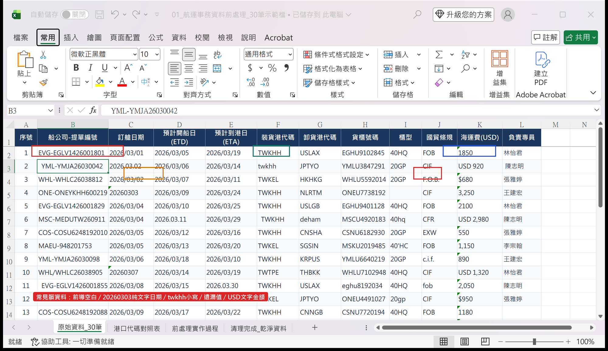
EVG-EGLV1426001829 完全重複。
\n。
WHL/WHLC...，第 24 筆用空白。
twkhh、國貿條規 F.O.B. / c.i.f.、櫃型 40'HC。
20260303，多筆為點號日期。
USD 920、$680、逗號千分位。
N/A。
免公式清理術：條件式格式標紅 & 移除重複項目
步驟 1 ｜ 條件式格式設定先標記重複
常用 ➔ 條件式格式設定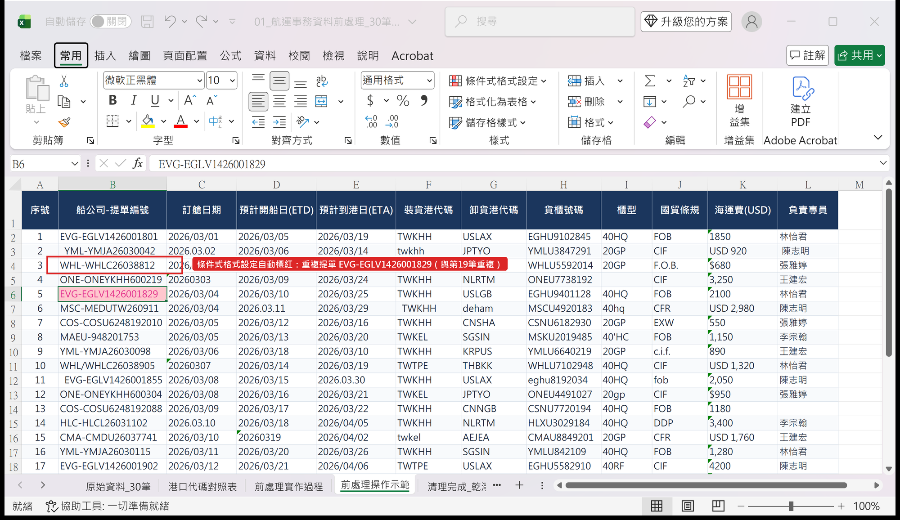
EVG-EGLV1426001829 瞬間亮紅底！
步驟 2 ｜ 執行「移除重複項目」
資料 ➔ 移除重複項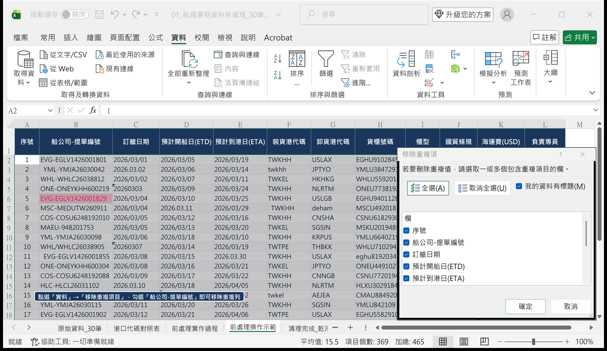
免公式清理術：Ctrl+H 尋找取代 & 資料剖析拆解欄位
步驟 3 ｜ 尋找及取代（Ctrl + H）標準化
Ctrl + H 批次替換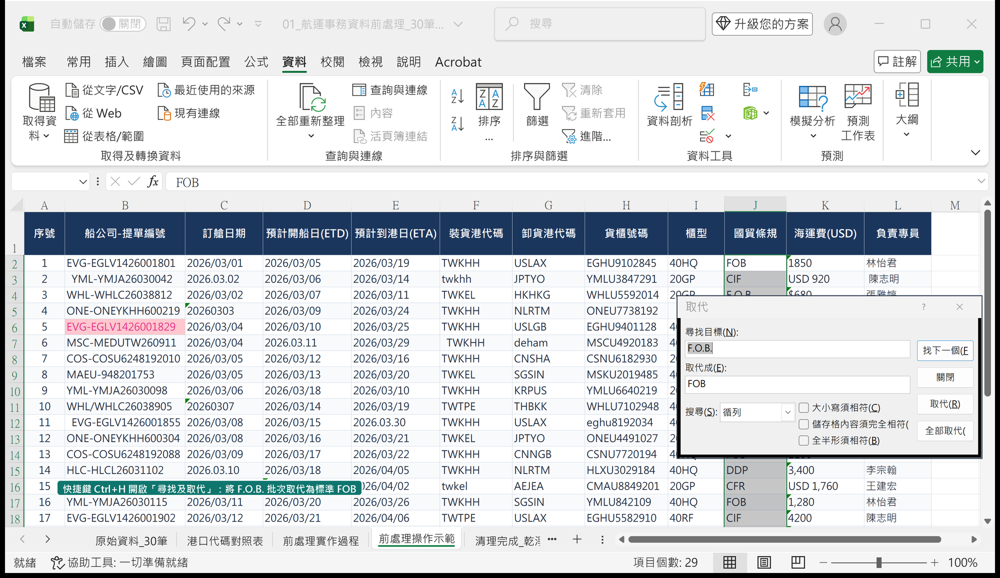
- 尋找
F.O.B.取代成FOB - 框選運費欄：尋找
USD（含空白）取代成「空值」，去除幣別文字。
步驟 4 ｜ 資料剖析（Text to Columns）
資料 ➔ 資料剖析精靈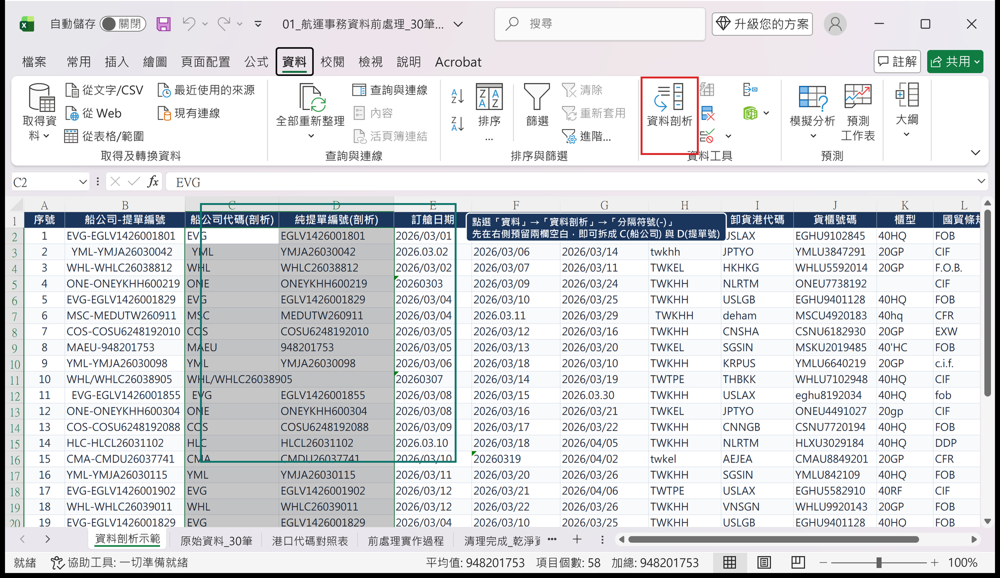
-」➔ 按完成。一秒將單號乾淨拆為 C 欄「船公司」與 D 欄「純提單號」！
免公式清理術：自動篩選缺漏 & Ctrl+T 升級結構化表格
步驟 5 ｜ 篩選空白與 F5 特殊目標補件
Ctrl + Shift + L / F5 空格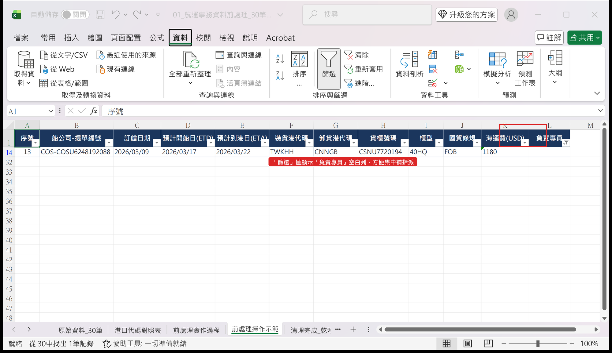
步驟 6 ｜ 格式化為表格（Ctrl + T）
Ctrl + T 建立結構化清單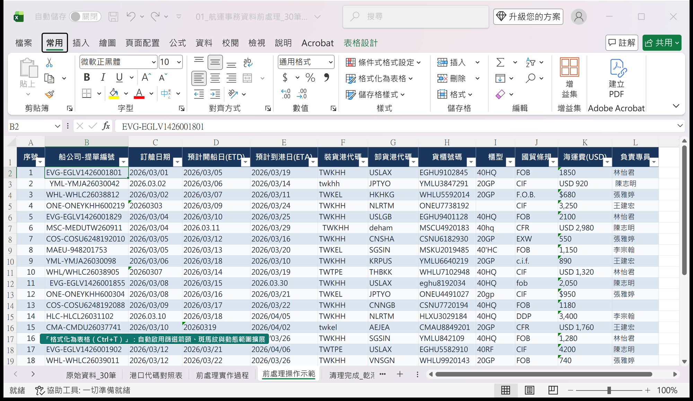
函數公式自動化：TRIM、CLEAN、UPPER 與 LEN 貨櫃檢核
TRIM + CLEAN 雙重空白換行清理
B 欄公式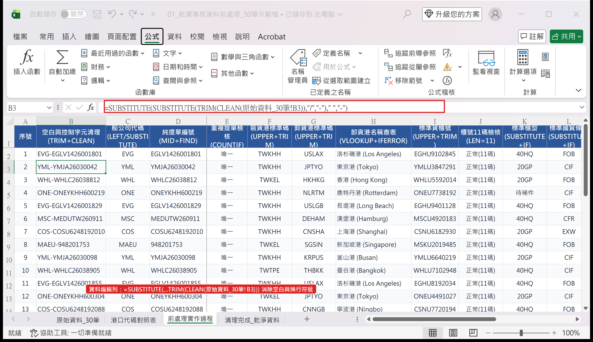
LEN 檢核 ISO 6346 貨櫃 11 碼標準
J 欄公式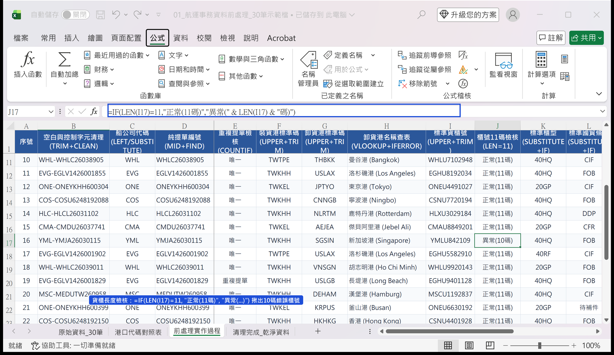
YMLU842109！
VALUE 數字轉型、IF 航程邏輯檢核與 VLOOKUP 查表成果
VALUE 轉純數值 & IF 航程異常攔截
P 欄航程天數公式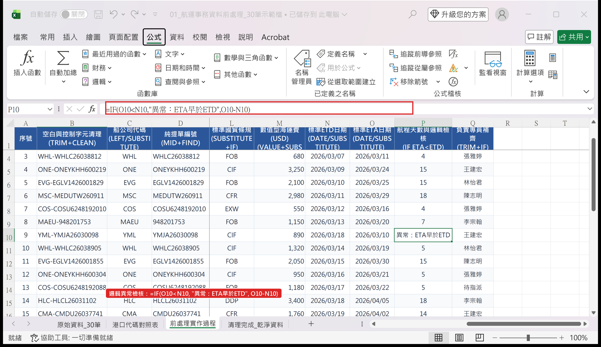
VALUE(SUBSTITUTE(K2,"USD","")) 轉為純數字；開船日與到港日相減若小於 0，自動標註「異常：ETA早於ETD」！
VLOOKUP 查表驗證與最終標準底表
清理完成_乾淨資料 (29筆)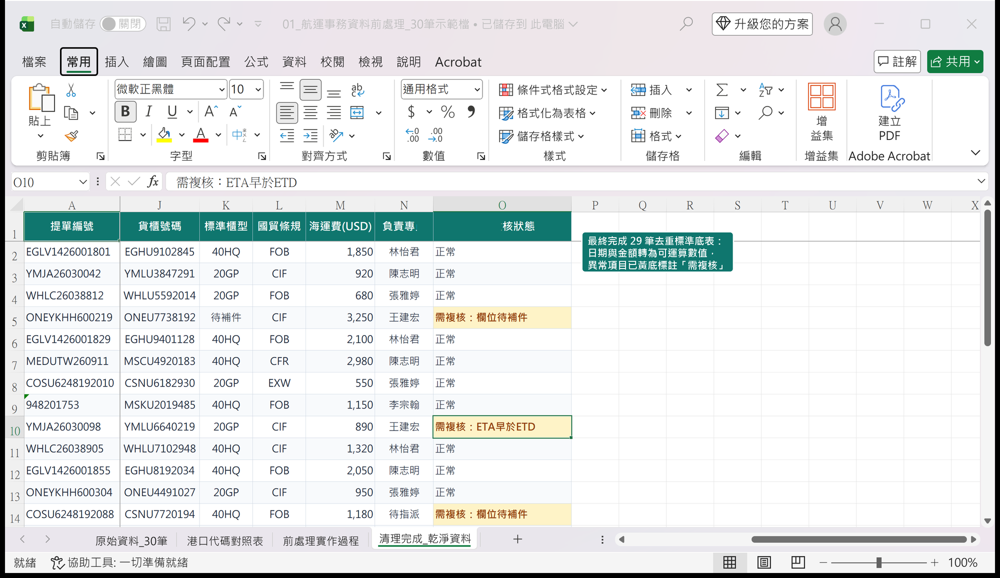
300 筆跨情境航運實戰：五大業務類型與八大任務
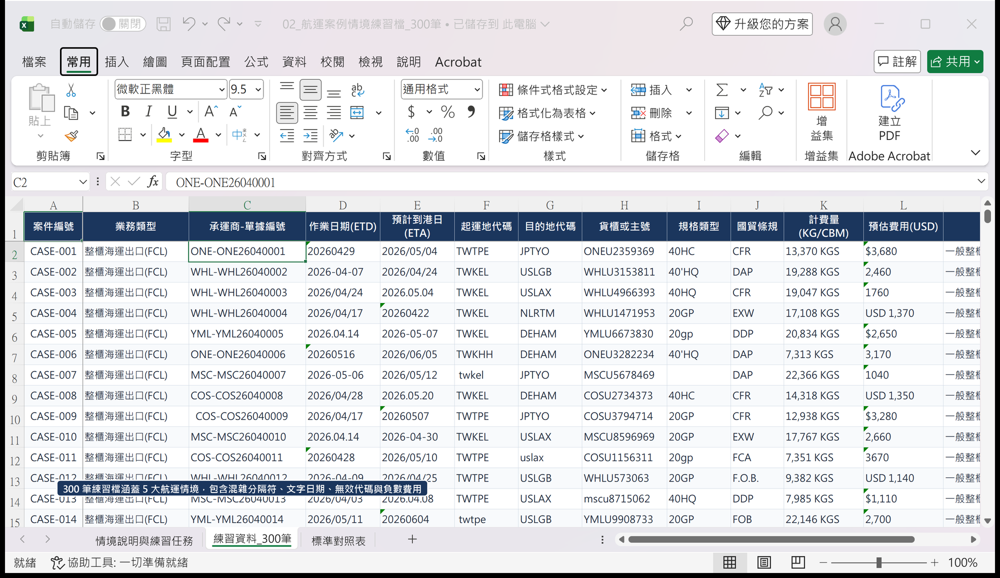
300 筆參考解答：自動統計檢核儀表板與基準數據
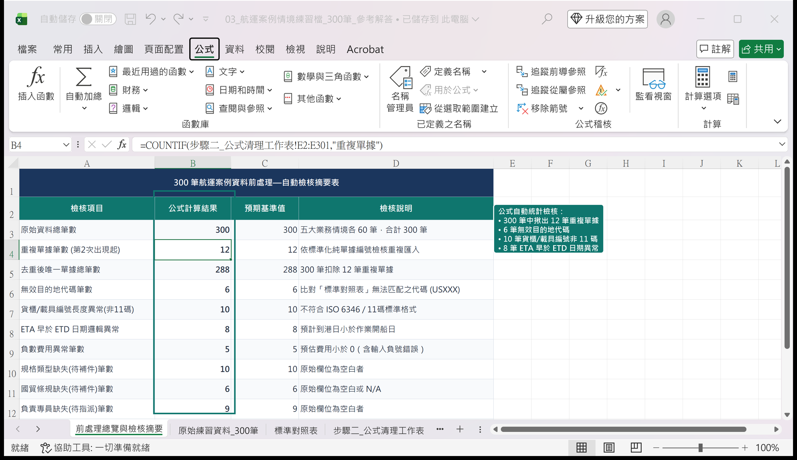
總結口訣、避雷心法與國際規範引用來源
🛡️ 航運行政人員前處理「四不四要」口訣
- ✖ 不 直接拿原始檔算公式（永遠先做備份複本）。
- ✖ 不 在分析底表合併儲存格或插入小計列。
- ✖ 不 忽視尾端看不到的換行符與多餘空白。
- ✖ 不 把幣別（USD）或單位（KGS）與數字寫在同一格。
- ✔ 要 熟練 TRIM、CLEAN 與 UPPER 基礎清理。
- ✔ 要 以 VALUE 與 DATE 強制轉型回正確數值。
- ✔ 要 善用 LEN 檢查 11 碼貨櫃號與 IF 抓倒置航程。
- ✔ 要 養成使用 Ctrl+T 格式化為表格的高效好習慣！